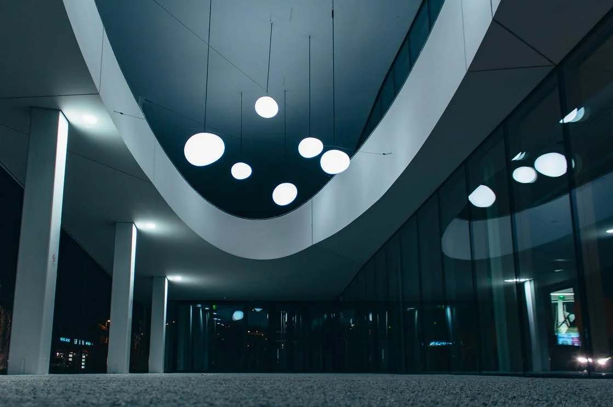

ASML kan risicomanagement toepassen door de fluctaties te verminderen.
Het commercieel risico is de fluctatie in de omzet. In de periode van 2010-2020 heeft ASML een variatiecoëfficiënt van 0,41. Hoe hoger dit getal des te groter het commerciële risico van ASML is. In de periode van 2010-2018 had ASML een lager variatiecoëfficiënt. Dit betekent dat het commercieel risico van ASML gestegen is in 2019.
Als het commerciële risico toeneemt dan zal het bedrijfsrisico toenemen. Hier gaat het om de fluctaties in het bedrijfsresultaat. In de periode van 2013-2020 is het bedrijfsresultaat van ASML toegenomen. Door de vaste kosten te reduceren worden de fluctaties in bedrijfsresultaat verminderd. ASML heeft payroll medewerkers. Outsourcing en balansverkorting flexibiliseren ook de vaste kosten.
Het financieel risico heeft te maken met de rentelasten en de schuldpositie. Dit risico is te managen door de solvabiliteit te verbeteren waardoor ASML minder rentegevoelig wordt. Het interestdekkingsgetal geeft aan in hoeverre met de winst voor belastingen en te betalen rente voldaan kan worden aan de renteverplichtingen. Het financieel risico is voor ASML gering.
Het totaal risico is de fluctatie van nettowinst. In de periode van 2018-2020 is de risicoverhouding positief veranderd. De winst/koers verhouding is gestegen en de rentabiliteit van het eigen vermogen is verbeterd. Het rendement is hoger en het risico is lager. Dit is een positieve uitkomst voor ASML.

ASML heeft externe leveranciers voor componenten en subassemblages die in systemen gebruikt worden, inclusief het ontwerp daarvan. De afhankelijkheid van een beperkte groep leveranciers brengt verschillende risico's met zich mee, waaronder een potentieel onvermogen om een adequate toevoer van vereiste componenten te verkrijgen, een verminderd controle over de prijsstelling en het risico van vroegtijdige levering van de componenten en subassemblages.
Het belangrijkste risico voor ASML is het commercieel risico. Het commercieel risico is na 2018 gestegen, de overige risico's zijn verminderd.
ASML heeft een risicomanagementprogramma dat gericht is op de onvoorspelbaarheid van financiële markten en ernaar streeft om potentieel negatieve effecten op de financiële prestaties te minimaliseren. Het financieringsbeleid maakt deel uit van het risicomanagement en is gebaseerd op liquiditeit, kapitaalstructuur en cash return.
ASML behoudt liquiditeit door de financiële stabiliteit te handhaven. ASML heeft een kapitaalstructuur dat gericht is op de kwaliteit van de investering door de credit rating. De cash return zorgt voor een duurzaam dividend per aandeel dat in de loop van de tijd zal groeien en halfjaarlijks betaald, waardoor betaald wordt aan aandeelhouders door middel van inkoop van aandelen of terugbetaling van kapitaal (bron).